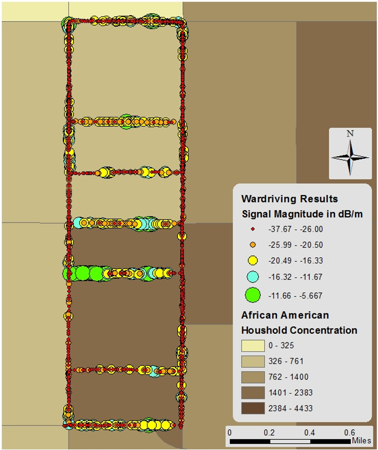
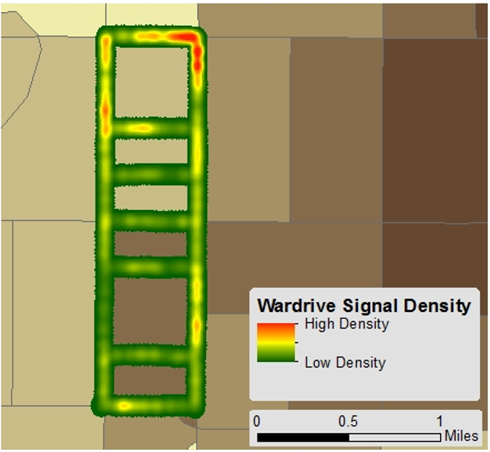
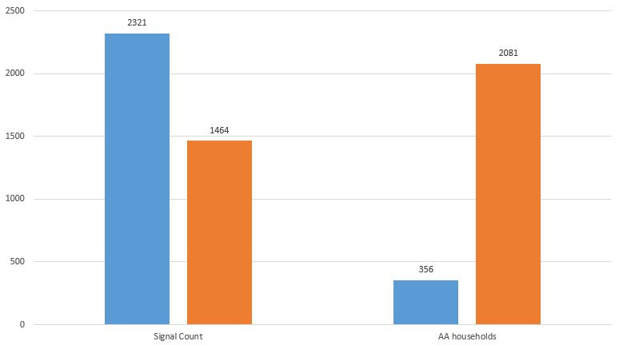
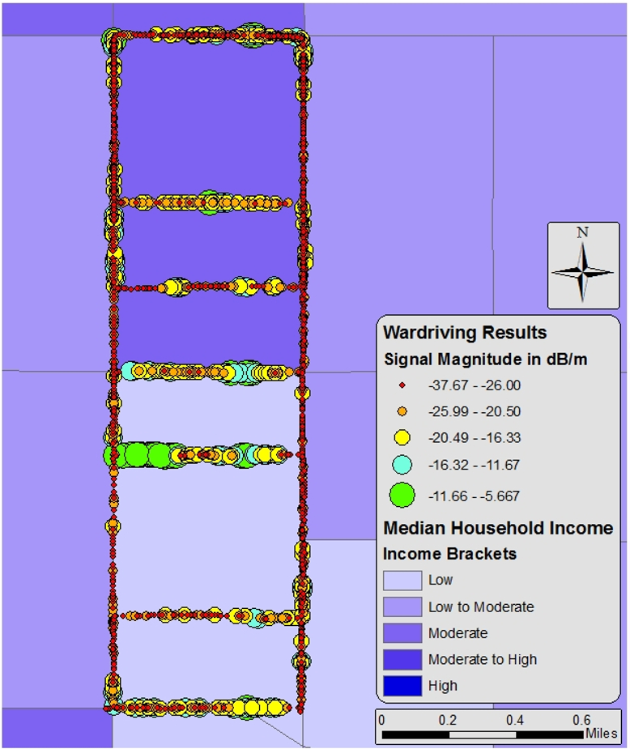
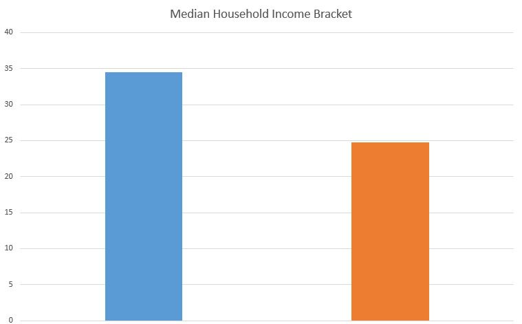
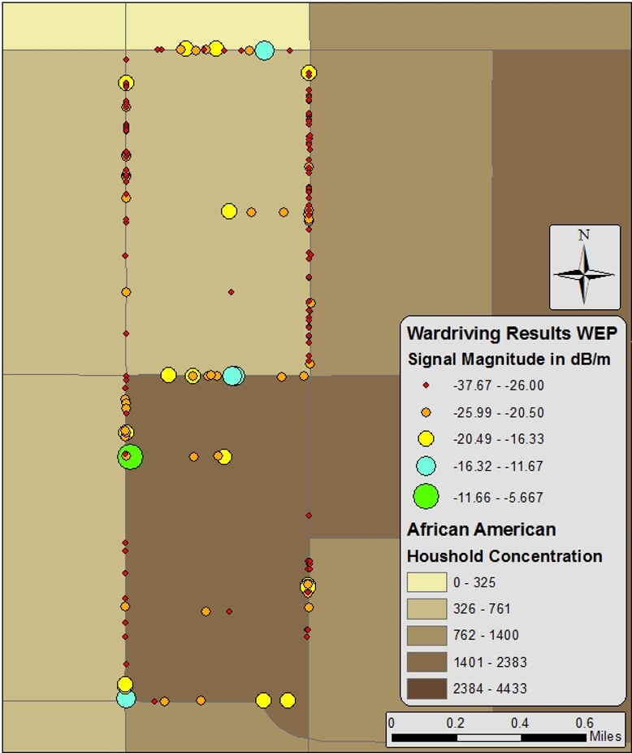

Note: In order to protect the sources of the collected data for this trial research, the data was made anonymous and will not be released.
Studies on the digital divide (the lack of access to technology for groups based on geographic inequalities of income, race, and/or other factors) and its effects on communities around the world have greatly expanded over recent years. The growth of information and communication technology (ICT) and the data it generates requires researchers to innovate new, creative methods of spatial collection and analysis. While crowdsource data and volunteered geographic information (VGI) have been used extensively, civil hacking still remains taboo amongst researchers.
There is also the largely negative stigma that surrounds hacking and hackers. The goal of this study (and many of my following posts) is not just to point out social injustice and neat uses of data science, but to demonstrate that hacking and hackers are a positive force for societies writ large.
Methodology
In this post, wanted to examine the potential of civil hacking techniques in exploring unseen facets of digital divide studies. I performed a test audit for Wireless Fidelity (WiFi) communications data spanning two census tracts and which was compared to data on racial and income composition of households at the 2010 US Census tract level. Data was collected using a cell phone and a simple route analysis was used to optimize my audit path for this study. Since this was an urban environment, all the environmental factors that could potentially affect my audit were taken into account (e.g., weather, electromagnetic interferences, traffic conditions, density/form of structures, transient hotspots from mobile devices, etc.). I then imported US Census data from TIGER and the American Community Survey (ACS) on income and self-identified ethnic heritage.
Results
The results of mobile-platform enabled, wireless data collection (better known as wardriving) and analysis reflect conclusions from similar, peer-reviewed academic studies regarding minority and low income urban community’s access to ICTs as less than communities composed of predominantly white or higher income households.
The study areas with predominantly African-American communities had far less wireless access points with lower security standards.
 WiFi signals and African American Concentrations  Signal Density and African American Concentrations  Signal Density and African American Concentrations{kind=link}
{kind=link}
{kind=link}
The study areas with predominantly lower income also had fewer wireless access points.
 WiFi signals and Median Household Income  Median Income per Tract{kind=link}
{kind=link}
Surprisingly, the difference in number of lower security devices using WEP (wired equivalent privacy) was marginal. However, this may be due to the fact that the lower income tract started using devices after security standards had shifted to WPA (WiFi protected access). This would indicate that the higher income tracts have had these devices for much longer (this is just an assumption since I’m lacking a proxy for installation date/times).
 WEP signals and African American Concentrations WEP Signal Density
WEP Signal vs African American Household Concentration per Tract
WEP Signal Density
WEP Signal vs African American Household Concentration per Tract
Conclusion
Obviously, I would need a much larger dataset to make this limited analysis a more conclusive methodology at the state and national scales (this was only two census tracks worth of data collected manually out of MANY census tracts). However, this study does show the potential for collective efforts for social justice monitoring using devices we have on ourselves everyday. Such decentralized practices could act to facilitate social demand for ISPs to provide a tiered services for lower income communities, ensuring children have the access they need for their education and development.
In addition to other forms of digital divide data, this technique could assist in guiding policy towards infrastructure investment, crime prevention, and educational outreach programs for communities with issues of restricted or inferior ICT access.
Security in the digital age is more than good encryption and two-factor authentication; it is ensuring that we give everyone the opportunity to educate themselves via broad access to ICTs as an increasingly important means of knowledge production/consumption and social empowerment. Civil hacking is playing and will play a large part in these efforts.
This work is licensed under a Creative Commons Attribution-NonCommercial-ShareAlike 4.0 International License.